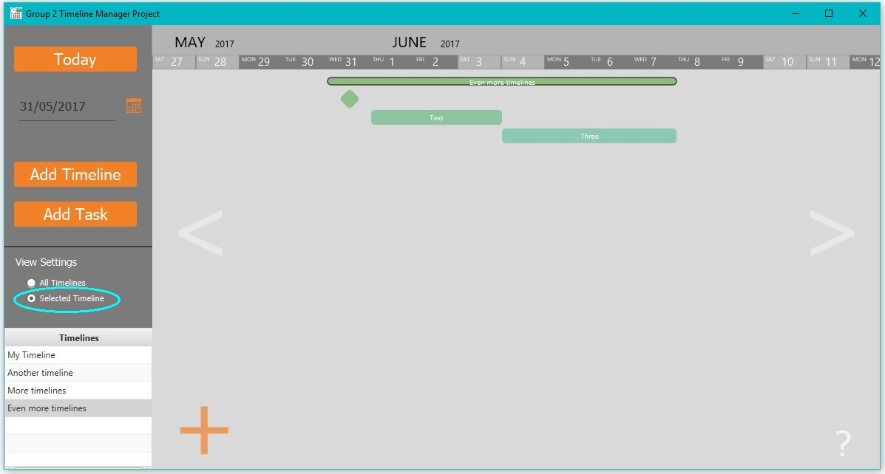

View Settings
From the View Settings menu the timeline viewer can be toggled to either display the selected timeline or all the timelines.
- Select a timeline by either:
- Clicking on the timeline
- Double-clicking on the timeline's name from the Timelines list
Now only the selected timeline will be displayed.

- Click on "All timelines" radio-button from View Settings to display all the timelines again
Back